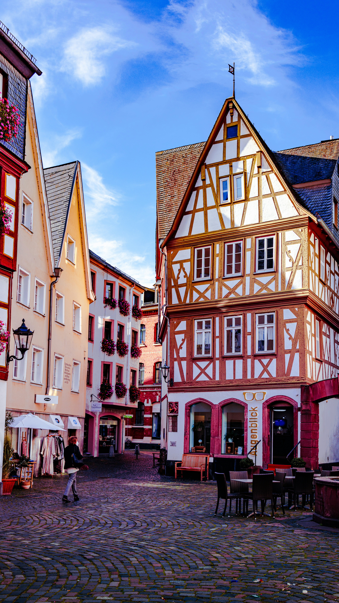
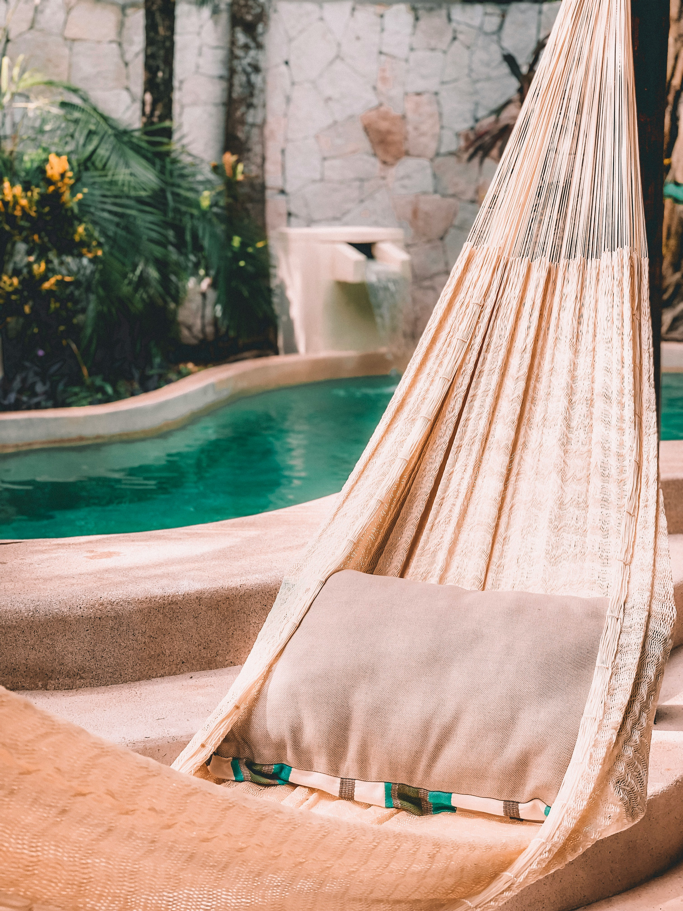

True luxury travel requires more than access—it demands deep, localized authority. By limiting our focus to a handpicked selection of global vacation pathways, we ensure every itinerary is constructed with absolute precision, exclusive insights, and seamless execution.
"The Ultimate Distinction of Life on the Water"
Our cruise collection explicitly segments voyages into intimate, design-forward pathways. True nautical luxury is not one-size-fits-all, which is why we thoughtfully match our travelers to the distinct worlds of ultra-premium ocean liners and immersive river cruising vessels.
By guiding you toward low-guest-count boutique ocean yachts and premium vessels like Virgin Voyages, we unlock hidden coastal harbors mega-ships can never touch. On the rivers, we orchestrate breathtaking journeys along waterways like the Danube, Rhine, or Seine, positioning you to glide directly into historic European city centers. From stateroom selection mechanics to private shore excursions, your time on the water is curated without friction.
View the Vessel Collection
"True Unplugged Relaxation, Uncompromised"
We completely reject standard definitions of the mass-market all-inclusive resort model. Our strategy focuses entirely on ultra-high-end, boutique, or highly secure private sanctuaries where 'all-encompassing' indicates exceptional culinary freedom, personalized butler services, and striking architectural brilliance.
From private plunge-pool suites tucked into tropical cliffside canopies to exclusive island enclaves across the Caribbean, we handle the comprehensive vetting of property tiers directly. This guarantees your tropical getaway operates as an absolute sanctuary of effortless, uncompromised peace.
Discover Your Oasis
"Tailor-Made Continental Architectures"
The most profound travel experiences happen when you step outside the lines of packaged tourism. Our specialty lies in designing highly customized independent travel (FIT) itineraries across Europe and prime global destinations, constructed entirely from a blank canvas to match your specific rhythm.
Whether it is a multi-city rail journey weaving through Italy, private-guided museum access in Paris, or villa rentals in the countryside, we fit the puzzle pieces together seamlessly. We map your transit logistics, private drivers, and boutique hotel connections with absolute precision so that your open-ended land exploration feels effortless.
Design Your Blueprint
"Rare Settings, Uncommon Access, Refined Graces"
For the discerning traveler who values discretion, high design, and cultural depth, our boutique portfolio uncovers hidden properties that don't look like traditional chain hotels. We align you with authentic, low-impact luxury spaces imbued with true character.
We leverage elite industry affiliations to pass exceptional VIP amenities directly to you—such as complimentary property upgrades, artisanal breakfast inclusions, resort credits, and early check-in flexibilities. This ensures your presence is recognized and elevated the moment you step foot through the entrance doors.
Experience Elite Access
"Protecting Shared Family Memories with Meticulous Planning"
While our core design focus anchors heavily within bespoke global luxury, we maintain a legendary suite of specialized planning blueprints for families and theme park enthusiasts. From the intricate variables of premium Disney Destinations and Universal Theme Parks to multi-generational legacy getaways, we smooth away park friction.
We navigate high-demand dining reservations, custom Lightning Lane schedules, VIP private tour guides, and military concession pricing to insulate your trip from typical crowds. Furthermore, as an active Certified Autism Travel Professional, I construct sensory-aware, beautifully balanced itineraries with profound empathy, ensuring a genuine vacation layout for families with diverse needs.
Structure Family Legacies


Immaculate tactical execution across elite entertainment hubs.
Navigating the global parks fleet as a Platinum insider. Custom daily flow plans, premium verandah layouts, and lightning-lane strategy setups.
Architecting front-tier access to cinematic realms, exclusive Express Unlimited passes, and priority arrangements at the new Helios Grand Hotel.
Expert, certified layout constructions addressing neurodivergent and diverse needs with seamless transit protocols and sensory-decompression spacing.